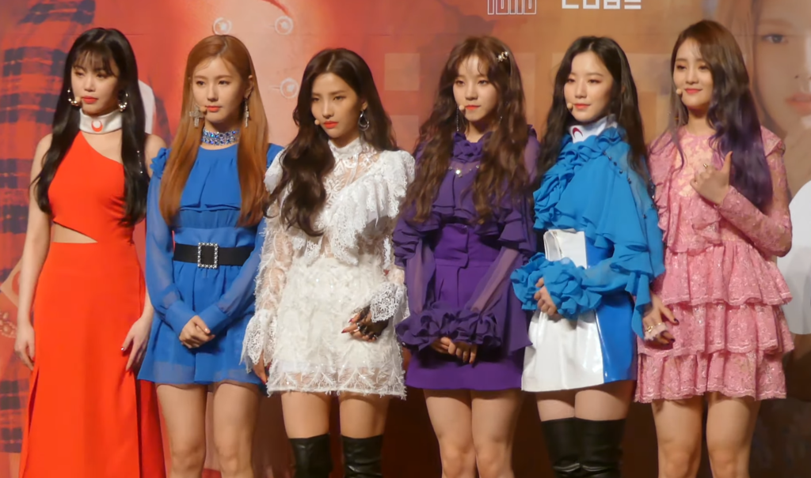
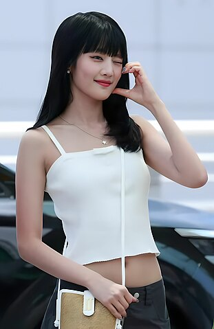
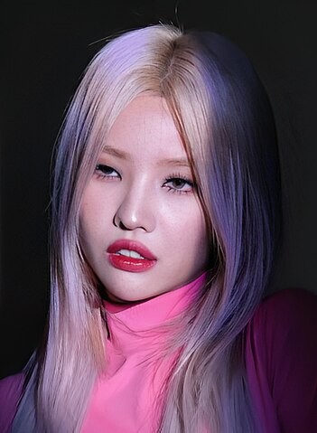
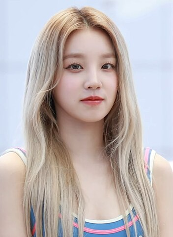
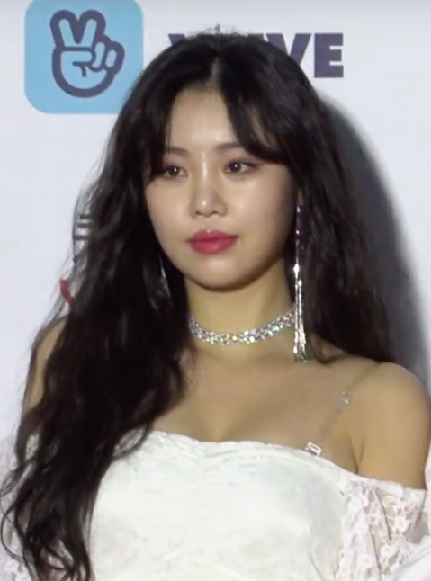

I-dle

i-dle (em coreano: 아이들; romaniz.: Aideul; estilizado em letras minúsculas), anteriormente conhecido como (G)I-dle, é um girl group multinacional sul-coreano formado pela Cube Entertainment. O grupo é composto atualmente por cinco integrantes: Miyeon, Minnie, Soyeon, Yuqi e Shuhua. Em 2 de maio de 2018, o grupo estreou com seu primeiro extended play, intitulado I Am com a faixa-título "Latata". Em 31 de julho de 2019, o grupo estreou no Japão sob a "U-Cube", com a versão japonesa do single "Latata".
Em 2018, o grupo foi apelidado de "rookies monstros" e foi considerado um dos girl groups sul-coreanos de maior sucesso originados fora das "Big 3", (as três grandes) gravadoras. Desde sua estreia, o grupo lançou seis extended plays e oito singles, que incluem: "Latata", "Hann (Alone)", "Senorita", "Uh-Oh", "Lion", "Oh My God", "Dumdi Dumdi" e "Hwaa".
Relativamente incomum para um grupo feminino de K-pop, o i-dle está diretamente envolvido na criação e produção da sua música. Em particular, Soyeon escreveu, co-escreveu e co-produziu a maioria dos lançamentos das faixas-título do grupo, com Minnie e Yuqi também co-escrevendo um número significativo das canções dos álbuns. Em conjunto com o lançamento de seu terceiro EP, "I Trust", em 2020, o grupo assinou com a Republic Records, uma gravadora norte-americana, para buscar uma expansão para o mercado dos EUA. Após seu lançamento, o grupo estabeleceu o maior recorde para um grupo feminino sul-coreano, liderando a parada de álbuns do iTunes e o quarto grupo feminino a vender 100 mil cópias na primeira semana de vendas. Seu single álbum de 2020, "Dumdi Dumdi", quebrou o recorde de vendas de um single álbum, tornando-se o segundo single álbum de grupo feminino mais vendido de todos os tempos. i-dle também se tornou o primeiro grupo de k-pop a ser entrevistado pela Forbes China.
Nome
Em uma entrevista ao The Star, a líder do grupo, Soyeon, revelou que o nome "Idle" (아이들) lhe ocorreu quando ela estava compondo "Idle Song". Ela mandou para a empresa e o nome foi formalizado após passar pela competição da empresa. No entanto, houve reações mistas na Coreia do Sul e no mundo, porque "아이들" (aideul, em coreano) significa "crianças" e "idle" (ocioso, em inglês), se refere a alguém que evita trabalhar. Consequentemente, o grupo foi renomeado para (G)I-DLE, com o "I" representando individualidade; o hífen, para mostrar que o nome foi dividido em duas partes; e "DLE" (deul, em coreano), como a forma plural de "I" em coreano, significando um grupo de seis personalidades diferentes reunidas. Quando o nome é mencionado verbalmente, o "G" entre parênteses não é incluído. Em 2025, (G)I-DLE se tornou i-dle em sua transmissão ao vivo do aniversário de 7 anos do grupo, representando o (G) como a Soojin.
História
Pré-estreia
Soyeon era uma trainee que representou a Cube Entertainment no programa de sobrevivência Produce 101, chegando ao 10º lugar no quinto episódio. No entanto, ela acabou não se tornando membro do grupo feminino final, I.O.I. Soyeon também competiu na terceira temporada do reality show de sobrevivência de rap Unpretty Rapstar, terminando como vice-campeã. Mais tarde, ela estreou como solista, lançando dois singles digitais: "Jelly" e "Idle Song"
Miyeon já havia treinado na YG Entertainment, entre 2010 e 2015, deixando a empresa após complicações desconhecidas relacionadas à sua estreia, mas se especula que ela viria a ser uma das integrantes do BLACKPINK, mas veio a ser cortada do grupo final. Ela então frequentou uma academia vocal. Soojin foi trainee da DN Entertainment em 2015, e treinou como membro do grupo feminino "Vividiva", sob o nome artístico de N.NA, mas saiu antes da estreia do grupo. Minnie apareceu no álbum Dance Party do Line Friends, lançado em novembro de 2017.
Em 5 de abril de 2018, a Cube Entertainment revelou o nome de seu próximo grupo feminino, (G)I-DLE. Antes da data de estreia, a empresa revelou as integrantes ao público, através de uma apresentação de dança de rua do Dingo Music, em Hongdae, Seul. O vídeo da apresentação excedeu dois milhões de visualizações no YouTube em menos de três semanas após a data de envio (15 de abril de 2018).
integrantes
-
Miyeon (hangul: 미연), nascida Cho Mi-yeon (hangul: 조미연) em Incheon, Coreia do Sul em 31 de janeiro de 1997 (28 anos). Vocalista principal Visual.
- 
Minnie (hangul: 민니), nascida Nicha Yontararak (tailandês: มินนี่ ณิชา ยนตรรักษ์) em Bangkok, Tailândia em 23 de outubro de 1997 (27 anos).Vocalista principal.
- 
Soyeon (hangul: 소연), nascida Jeon So-yeon (hangul: 전소연) em Seongnam, Coreia do Sul em 26 de agosto de 1998 (26 anos).[179] É a rapper principal e líder do grupo subvocalista.
- 
Yuqi (hangul: 우기), nascida Song Yuqi (chinês simplificado: 宋雨琦) em Pequim, China em 23 de setembro de 1999 (25 anos).[183] Dançarina principal, subvocalista, rapper principal, rosto do grupo.
-
Shuhua (hangul: 슈화), nascida Yeh Shuhua (chinês simplificado: 葉舒華) em Taiwan em 6 de janeiro de 2000 (25 anos).[184] subvocalista, visual, maknae.
Ex-integrante
-

Soojin (hangul: 수진), nascida Seo Soo-jin (hangul: 서수진) na Coreia do Sul em 9 de março de 1998 (27 anos).
Filmografia
Programas de variedade
| Ano |
Titulo |
Canal |
| 2019 |
Queendom |
Mnet |
| 2020 |
Life Co LTD |
Lifetime |
| Idol Workshop |
U+ Idol Live |